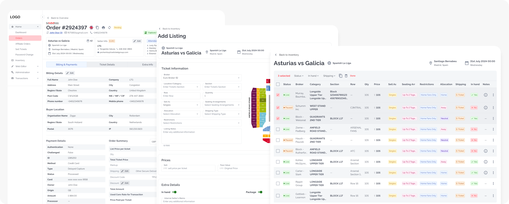
Ticket Marketplace Backoffice Redesign
Background
The platform served as a trusted intermediary in event ticketing, connecting ~100 brokers with buyers through consumer-facing websites. Brokers managed inventory and pricing through the backoffice, while admins regulated compliance and handled order fulfillment. After 10+ years without strategic redesign, the system had accumulated significant technical debt—outdated workflows, slow performance, and a UI that made routine tasks take 2-3x longer than necessary.
The Challenge
Redesign a 10+ year old backoffice system for a ticket marketplace serving ~100 brokers and ~15 admins. The platform was plagued by outdated UI, convoluted workflows, and processes that took 2-3x longer than necessary—directly impacting user productivity and business efficiency.
Overview
Senior UI/UX Designer
Solo Designer
Jun 2024 - Feb 2026 (20 months)
Event Ticketing B2B/B2C
PM, Frontend/Backend Developers, BA
My Design Process
As the sole designer, I led the complete redesign from research through implementation, working incrementally to minimize risk while delivering continuous value.
Research & Discovery
- Behavioral analytics tracked user behavior on production system
- Stakeholder interviews with Product Owners (who were also users)
- Broker focus groups testing prototypes with real users
- Analytics deep-dive analyzing heatmaps and click patterns
Users spent 5-7 minutes on tasks that should take <1 minute. 80% of users only used 3 of 15+ available filters. No bulk operations meant repetitive tasks took 50-70 minutes. Order completion flows lacked clear guidance, causing frequent errors
Ideation & Design Decisions
- Studied successful patterns (Notion's inline editing, Airtable's bulk actions)
- Sketched multiple information architecture approaches
- Prioritized high-impact workflows based on user data
- Collaborated with developers to validate technical feasibility early
Prototyping
- Created low-fidelity wireframes for stakeholder alignment
- Built high-fidelity prototypes in Figma
- Designed comprehensive flows for all user roles (Brokers, Admins, CSRs)
- Established Material UI-based design system for consistency
Testing & Validation
- Limited rollout testing: 10 beta users before full release
- PM-facilitated sessions with real brokers testing prototypes
- A/B testing for marketplace website features
- Gathered quantitative data + qualitative feedback
Iteration & Refinement
- Average 5-6 iterations per major feature
- Continuous refinement based on production analytics
- Incremental releases to minimize disruption
- Regular stakeholder presentations to maintain alignment
Core Workflows Redesign
Through this iterative process, I redesigned three critical workflows that represented the majority of user activity:
Tickets Listing Management Redesign
The Problem
Brokers managed their primary inventory through a broken workflow: searching through 2000+ mixed results, navigating multiple pages, and editing listings one at a time.
My Solution
- Redesigned information architecture: Event Overview → Manage Tickets → Flexible Editing
- Introduced inline editing for quick updates
- Added bulk actions for managing multiple listings simultaneously
- Added bulk actions for managing multiple listings simultaneously
Inventory
Manage Tickets
Bulk actions and Inline editing
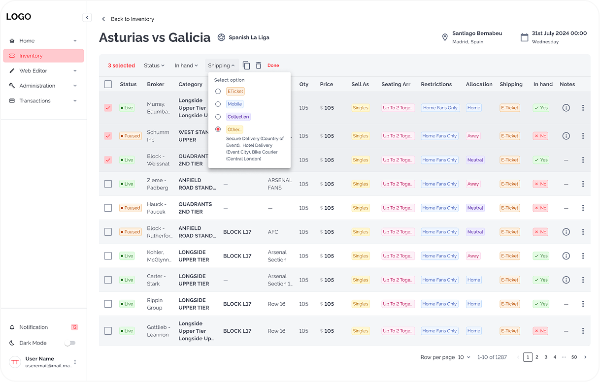
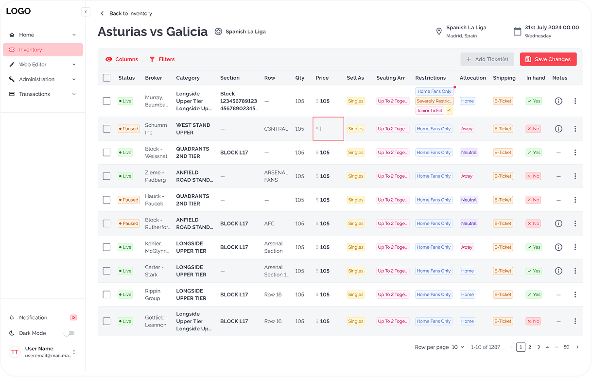
Old Flow
Click on image to zoom
New Flow
Click on image to zoom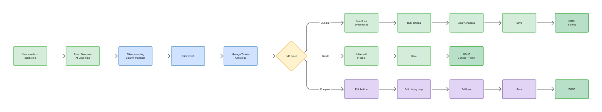
Redesigned UI Impact
Orders Overview & Inline Actions
The Problem
Finding orders required multiple searches through 20 filter fields. Users had to navigate to detail pages for every action, breaking their workflow.
My Solution
- Created dual-view system: All Orders (chronological) + Event View (grouped by event)
- Added Actions column with role-based buttons (Submit, Approve, Complete)
- Enabled actions via modal workflows without leaving the table
Orders Overview / All Orders
Orders Overview / Orders by Events
Modals for Complete Order Flow
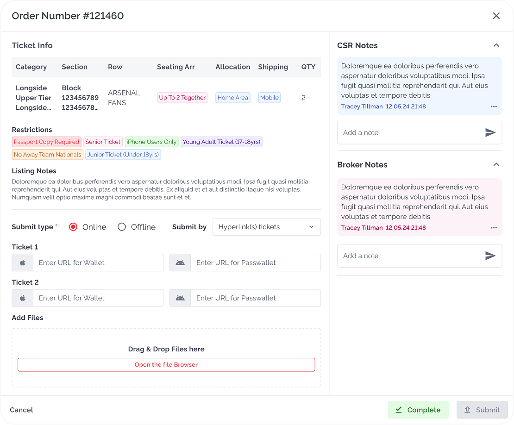
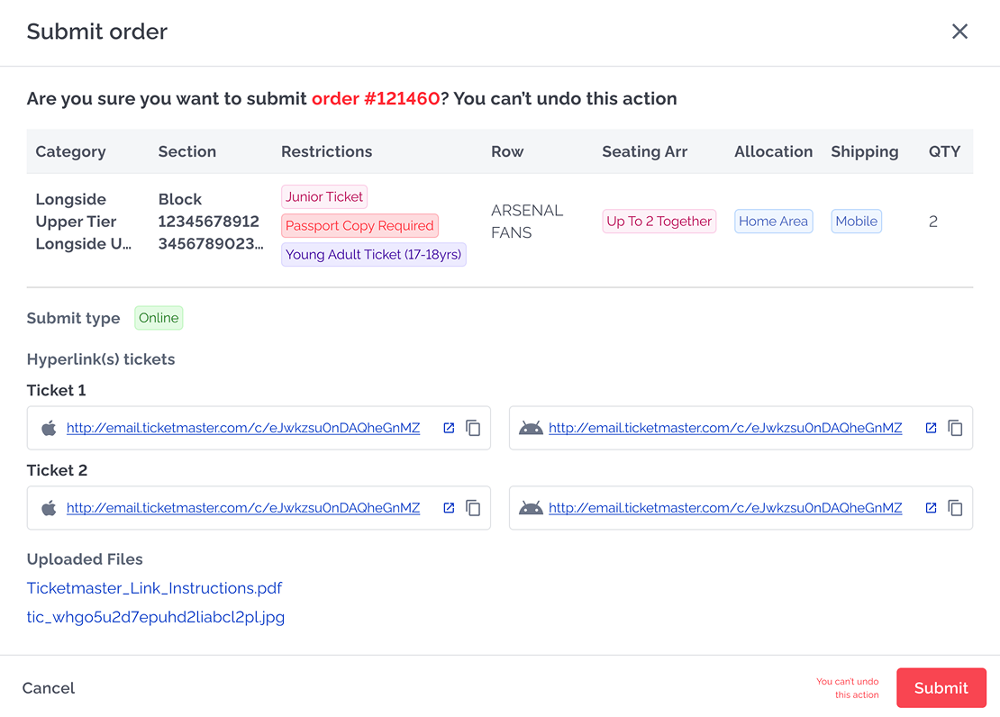
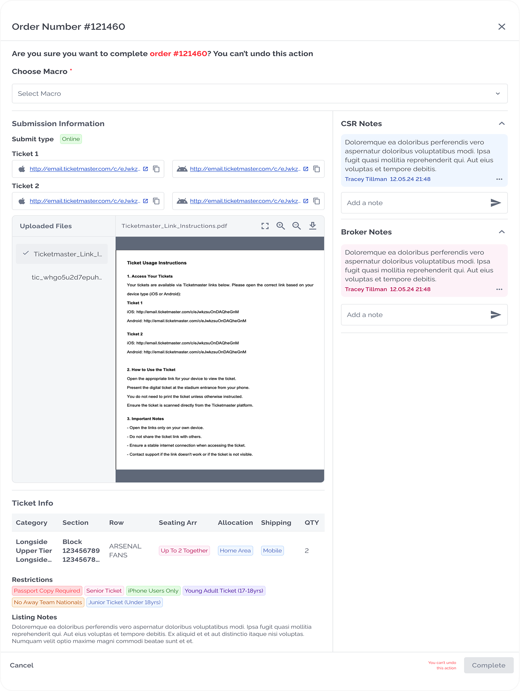
Old Flow
Click on image to zoom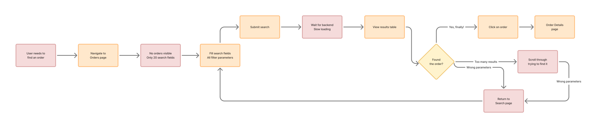
New Flow
Click on image to zoom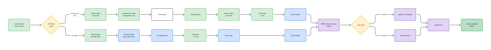
Redesigned UI Impact
Order Completion Flow Redesign
The Problem
Completion process was confusing, lacked reject workflow, and prevented admins from editing submissions. Order details page had no visual hierarchy, making it hard to understand status and requirements.
My Solution
- Redesigned page with clear visual hierarchy: organized tabs, sections, and action buttons
- Created comprehensive completion flows for all shipping types (Mobile, ETicket, Collection, etc.)
- Added online/offline submission options
- Implemented reject flow with editing capabilities for admins
- Added modal confirmations to prevent errors
- Integrated automated macros for buyer communications
Order Details Page. Billing & Payments
*Due to the presence of sensitive information and real user data, I'm unable to display the "before" version of this flow in my portfolio
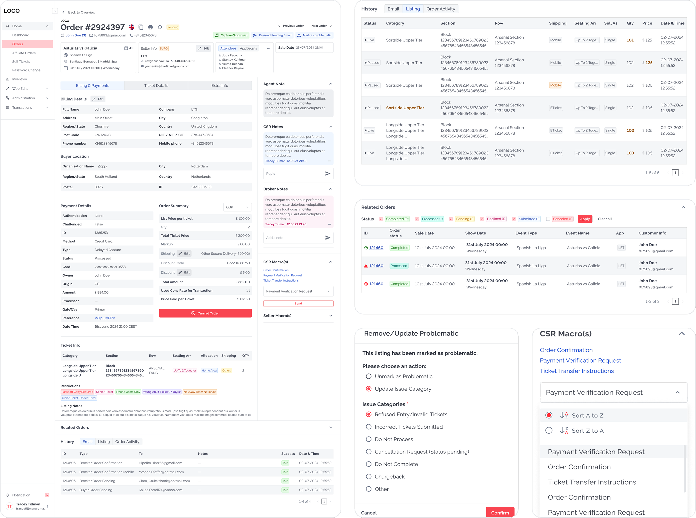
Order Complete flow. Shipping Type Mobile (most popular user case)
*Due to the presence of sensitive information and real user data, I'm unable to display the "before" version of this flow in my portfolio
Broker View before Submission
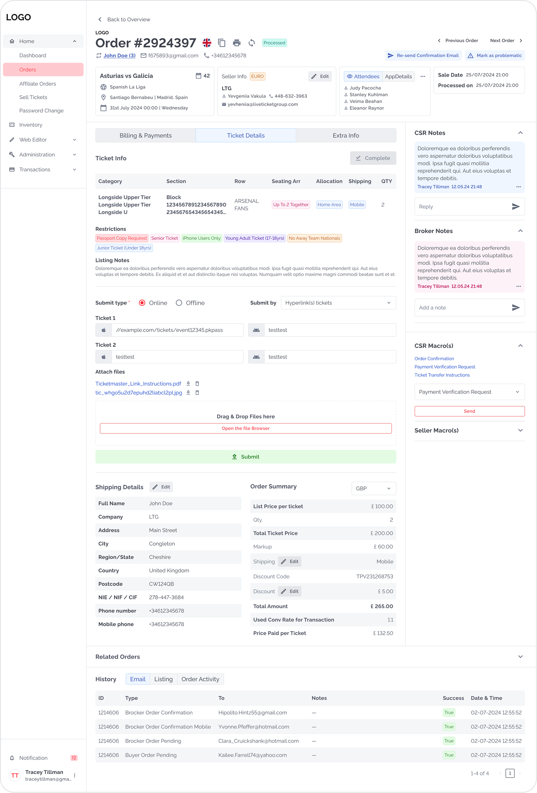
Admin View before Completion
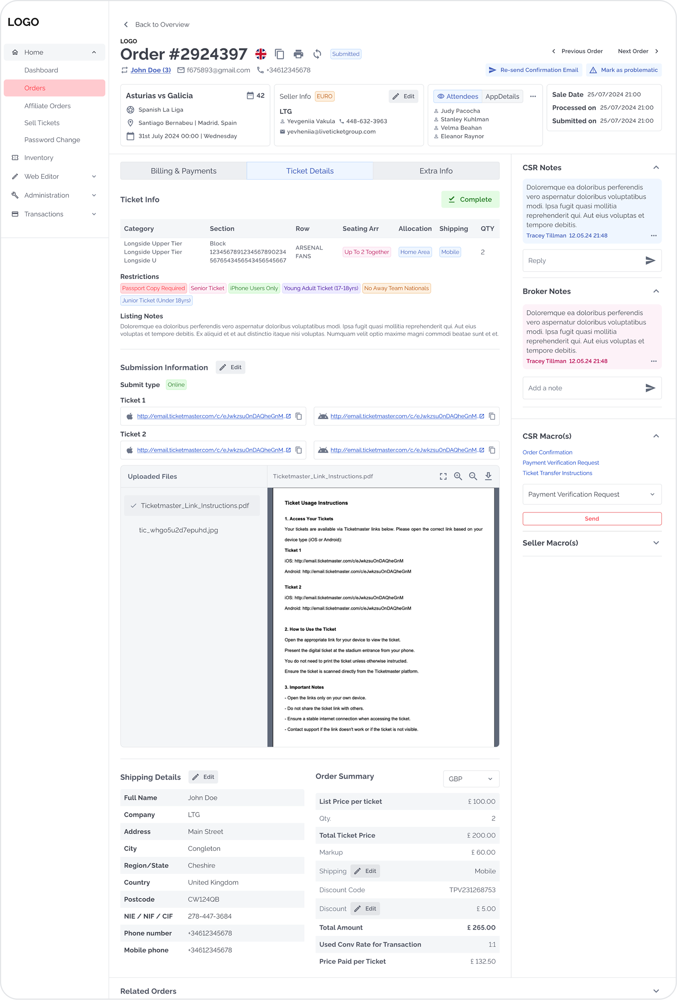
Redesigned UI Impact
Design System
Built scalable design foundation using Material UI adapted with custom components:
Overall Impact
Quantitative Results
Qualitative Results
Key Challenges Overcome
Legacy Backend Limitations
Negotiated with developers to find creative workarounds within technical constraints. Attended all grooming sessions to understand feasibility early.
Complex Approval Process
Built trust through incremental wins. Each successful release (5-6 iterations per feature) made stakeholder buy-in easier.
Poor Documentation
I create navigation, flows, and structure to ensure clarity, usability, and scalability across the product.
Solo Designer Ownership
Managed entire design process from research to handoff, collaborated across PM, dev, and BA teams, and defended decisions to stakeholders.
Why This Project Matters
This wasn't just a visual refresh—it was a fundamental rethinking of how users interact with complex data workflows. By combining user research, strategic thinking, and pragmatic problem-solving, I transformed a frustrating legacy system into an efficient platform that saved users hours every week.